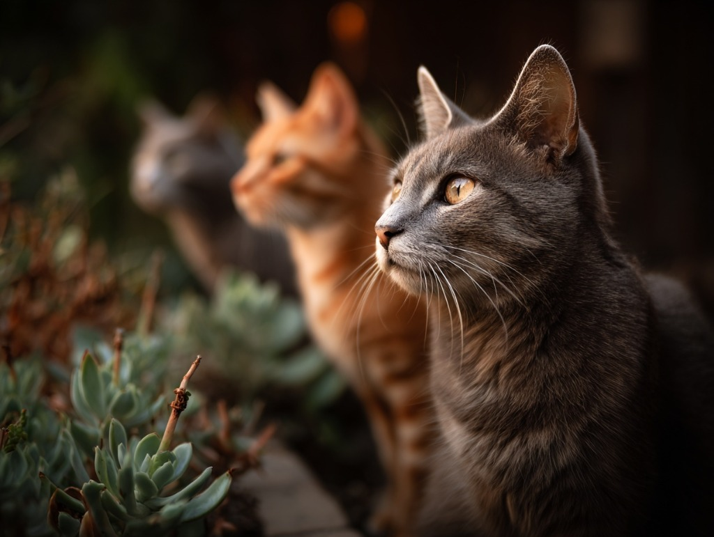

Parekklisia's cats belong to one of the oldest human-cat stories in the world.
Gardens of St. Gertrude is located in Parekklisia, near Shillourokambos, where archaeologists found some of the earliest known evidence of a cat buried near a human. The cats here are not simply anonymous strays. They are Parekklisian cats living in a place with a deep feline history.
Today, abandoned and free-roaming cats across Cyprus still face hunger, untreated illness, injuries, unmanaged breeding, and limited access to veterinary care. The Gardens provides daily care for 92 cats and counting while supporting prevention work that reduces future suffering.
Because there are so many stray cats on the island, people often leave cats behind at colonies, bins, roadsides, or sanctuary gates. Locally this is often called "dumping." We use that word only to name the problem. Cats are not trash; they are lives someone has abandoned.
Help Fund the Response
Why rescue alone is not enough
Feeding saves lives today, but sterilization, medical care, and stable sanctuary space are what keep the same suffering from repeating tomorrow.
Overpopulation compounds quickly
The Gardens has spayed and neutered more than 150 cats, but sterilization must keep scaling because kittens are still born into colonies already short on food, shelter, and medical support.
Medical cases need continuity
Injured, sick, senior, and immunocompromised cats need treatment plans, recovery time, and a protected place to stabilize.
Sanctuary care creates proof
Daily routines turn donations into visible outcomes: food, medicine, surgery, spay/neuter support, and long-term safety for the 92 cats currently in the Gardens' care.
Daily care is the bridge between crisis and prevention.
The Gardens provides a safe home for cats who cannot return to the street, supports veterinary care for urgent cases, and keeps prevention at the center of the work.
Since its inception, the Gardens has also supported other animal rescues in Cyprus. Karen Pendergrass and Kimberly Eyer, who run the Gardens and own the Paleo Foundation, have directed more than $460,000 USD through the Paleo Foundation to Gardens of St. Gertrude and other animal rescue organizations.